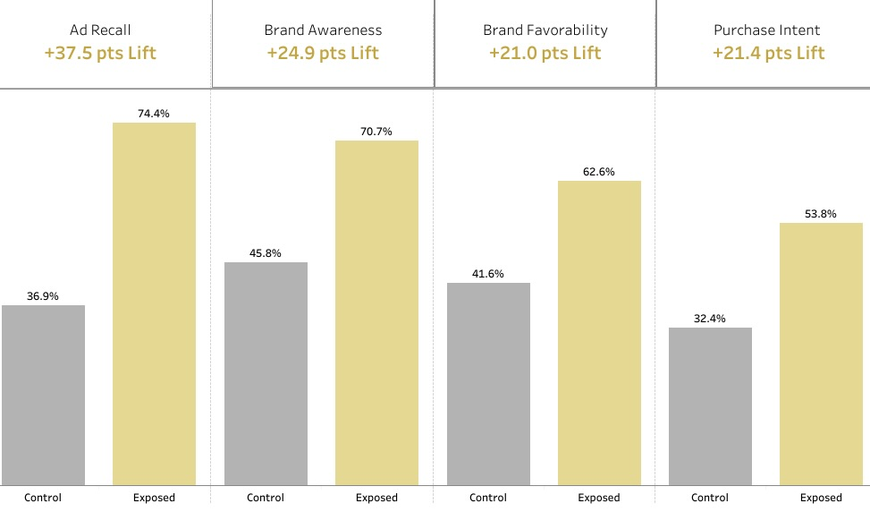
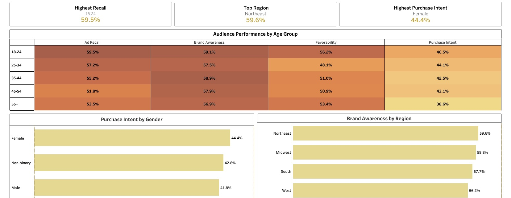
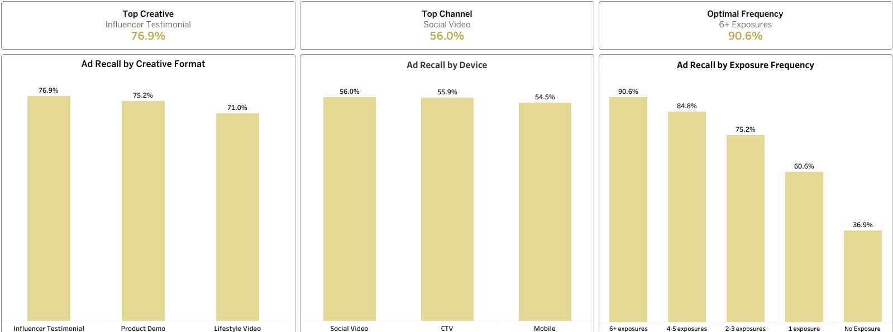

Highest recall
Ages 18–24 responded most strongly to the campaign.
Brand lift measurement · 2025
How campaign exposure moved awareness, favorability, and purchase intent—and the creative choices behind the strongest response.
The question
Lumina Beauty is a fictional luxury skincare brand evaluating a multi-channel awareness campaign. The analysis compares exposed and control audiences, then identifies the strongest audience, creative, channel, and frequency signals.
This portfolio project uses synthetic survey data to demonstrate an end-to-end brand lift measurement workflow.
1 · Campaign impact
Across the full funnel, the exposed audience outperformed the control group—showing the campaign did more than earn attention.

2 · Audience response
Audience patterns show where the campaign had the clearest resonance—and where a refined targeting strategy can concentrate future investment.

Ages 18–24 responded most strongly to the campaign.
Female respondents showed the strongest purchase intent.
The Northeast recorded the highest brand awareness.
3 · Performance drivers
The campaign’s strongest execution signals offer a practical blueprint for the next media and creative plan.

4 · Recommended next steps
Use influencer testimonials as a core creative format, supported by product demonstrations and clear benefit messaging.
Prioritize social video as the primary distribution channel while testing supportive formats by audience segment.
Build a sequencing plan that reaches audiences consistently without relying on a single exposure.
Project resources
Open the interactive Tableau story, review the analysis code, or see the original presentation deck.